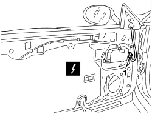
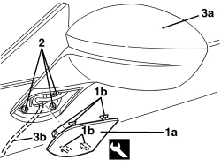
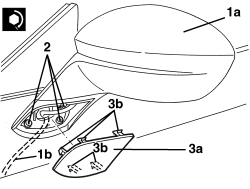

7005R30 ELECTRICALLY CONTROLLED DOOR MIRROR (ONE) - R+R
- Path
- Procedures > 70 FITTINGS > 7005 PASSENGER COMPARTMENT FRONT SIDE DOORS > 7005R FRONT DOOR MIRRORS > 7005R30 ELECTRICALLY CONTROLLED DOOR MIRROR (ONE) - R+R
- Kind
- repair procedure (removal / refitting; the operation number is the code)
- Applies to
- all engines; all production periods
- Interactive page
- https://sloeber94.github.io/elrnDB-aBrrSpdr/en/#/946002535
Applies to: all engines; all production periods
 Removing
Removing
 Refitting
RefittingOp. 7005E38 FRONT SIDE DOOR INTERIOR HANDLE- R.R.
Op. 7005M14 SWITCH UNIT ON DRIVER'S FRONT DOOR - R.R.
- Or, alternatively
Op. 7005M12 PASSENGER SIDE FRONT DOOR ELECTRICALLY OPERATED WINDOW SWITCH - R.R.
Op. 7040E24 LOWER COURTESY LIGHT IN DOOR PANEL - R+R
Op. 7005E12 CORNER COVER FOR ONE FRONT SIDE DOOR, LH OR RH - R.R.
Op. 7005E11 LH OR RH FRONT DOOR INNER PANEL - R+R WITH FOULING PARTS REMOVED
1. Disconnect the electrical connection.
Description | Component |
|---|---|
DRIVER'S DOOR CONTROL UNIT (NPG) | |
PASSENGER SIDE DOOR JUNCTION UNIT (NPP) |

Applies to: all engines; all production periods
1. Remove the cover (1a) releasing the retainers (1b) using the special tool.
Tool | Description | Function | Validity |
|---|---|---|---|
1823014000 | Knife | Retainer removal |
2. Undo the bolts fixing the rear view mirror.
3. Remove the rear view mirror (3a) releasing the bridge (3b).

Applies to: all engines; all production periods
Refitting
Removing- Check that the rear view mirror is not damaged.
1. Place the rear view mirror (1a) in position attaching the bridge (1b).
2. Tighten the bolts fixing the rear view mirror.
Component | Fastening | dia | Value (daNm) | Validity |
|---|---|---|---|---|
EXTERIOR REAR VIEW MIRROR | Bolt | M6x12 | 0.7 ÷ 1.1 |
3. Place the cover (3a) in position and attach the retainers (3b).

Applies to: all engines; all production periods
- Connect the electrical connection.
Op. 7005E11 LH OR RH FRONT DOOR INNER PANEL - R+R WITH FOULING PARTS REMOVED
Op. 7005E12 CORNER COVER FOR ONE FRONT SIDE DOOR, LH OR RH - R.R.
Op. 7040E24 LOWER COURTESY LIGHT IN DOOR PANEL - R+R
Op. 7005M12 PASSENGER SIDE FRONT DOOR ELECTRICALLY OPERATED WINDOW SWITCH - R.R.
Op. 7005M14 SWITCH UNIT ON DRIVER'S FRONT DOOR - R.R.
Op. 7005E38 FRONT SIDE DOOR INTERIOR HANDLE- R.R.
- Check that the dismantled parts are working.
Topics linked from this page (8)
- 7005E11 LH OR RH FRONT DOOR INNER PANEL - R+R WITH FOULING PARTS REMOVED
- 7005E12 CORNER COVER FOR ONE FRONT SIDE DOOR, LH OR RH - R.R.
- 7005E38 FRONT SIDE DOOR INTERIOR HANDLE- R.R.
- 7005M12 PASSENGER SIDE FRONT DOOR ELECTRICALLY OPERATED WINDOW SWITCH - R.R.
- 7005M14 SWITCH UNIT ON DRIVER'S FRONT DOOR - R.R.
- 7040E24 LOWER COURTESY LIGHT IN DOOR PANEL - R+R
- M066 DRIVER'S DOOR CONTROL UNIT (NPG)
- M067 PASSENGER DOOR CONTROL UNIT (NPP)
Topics that link to this page (15)
- J042 RIGHT DOOR MIRROR ELECTRICAL ADJUSTMENT NOT WORKING
- L020 PASSENGER SIDE TEMPERATURE ADJUSTMENT DOES NOT WORK
- L021 REAR PASSENGER TEMPERATURE ADJUSTMENT NOT WORKING
- L025 AIR HEATING IS NOT ACTIVATED WITH LOW OUTSIDE TEMPERATURE
- T001 WIND NOISE FROM THE FRONT DOORS
- 7005OA FRONT DOOR WIND NOISE LOCALISATION
- 7005R37 DOOR MIRROR COVER (ONE), LEFT OR RIGHT - R.R
- 7005R38 FOLDING MOTOR FOR DOOR MIRROR (ONE), LEFT OR RIGHT - R.R.
- 7005R90 ELECTRIC DOOR MIRROR CABLE LOOM - R.R OR REPLACE
- E3030 REAR SCREEN AND REAR VIEW MIRROR DEMISTING - WIRING DIAGRAM
- E3030 REAR SCREEN AND REAR VIEW MIRROR DEMISTING - COMPONENT LOCATION
- E3032 REAR VIEW MIRRORS ADJUSTMENT - WIRING DIAGRAM
- E3032 REAR VIEW MIRRORS ADJUSTMENT - COMPONENT LOCATION
- E6020 AIR CONDITIONER - WIRING DIAGRAM
- E6020 AIR CONDITIONER - COMPONENT LOCATION